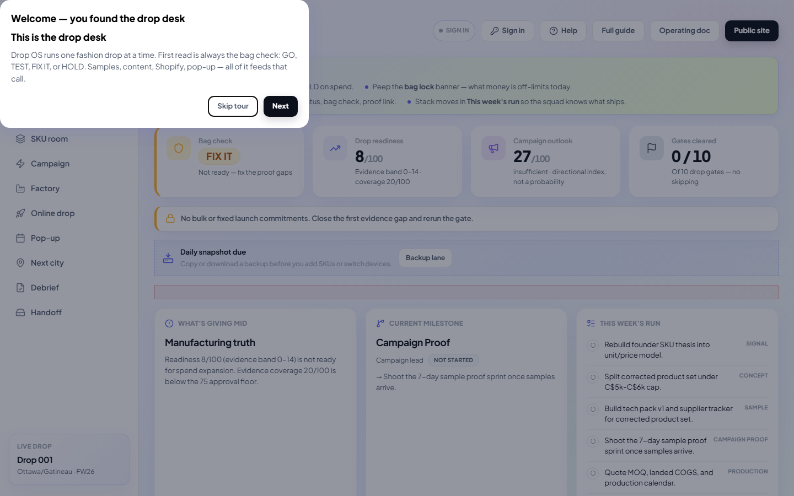
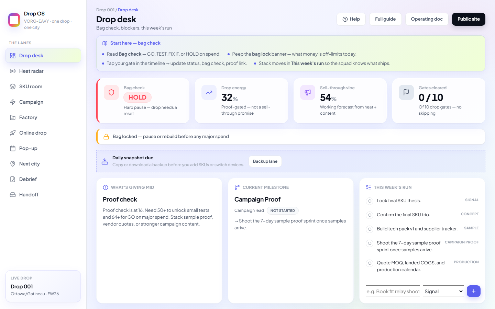
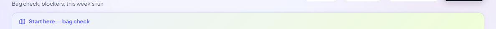
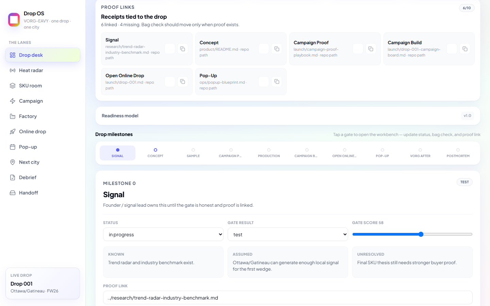
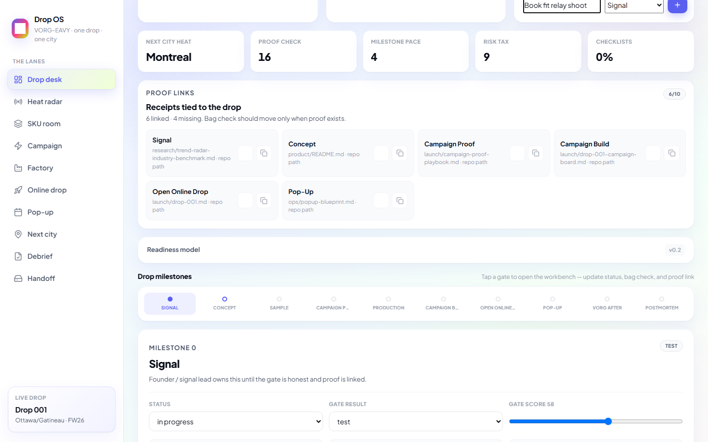
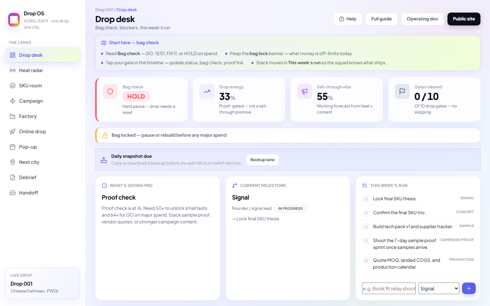
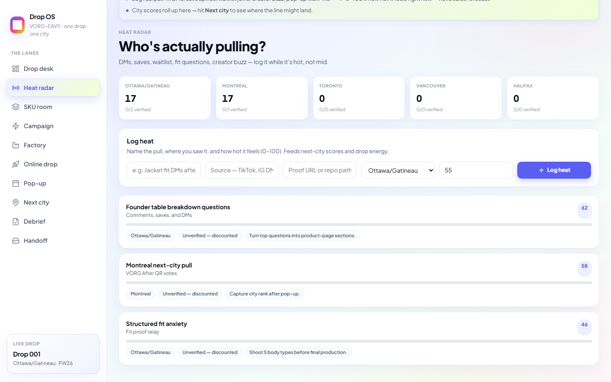
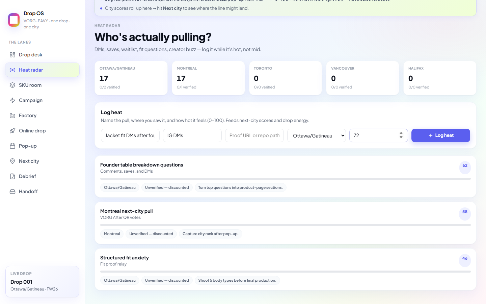
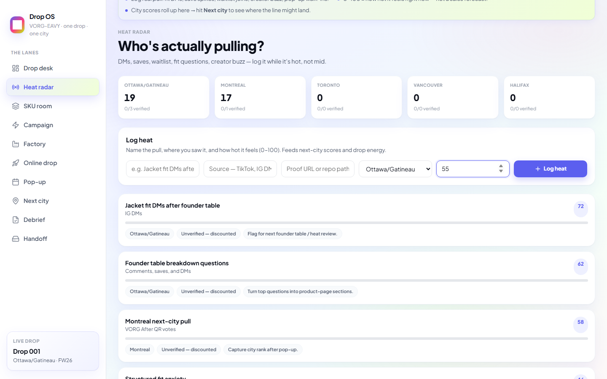

Screenshot guide for the whole desk — every lane, every move. Drop OS is VORG-EAVY's internal drop desk:
one collection, one city wedge, bag checks before bulk spend. If you're new, do the tour on first open, then use this page when you need the receipts.
0. First open — orientation tour
First time on this device? You get a 4-step tour. It explains bag check (GO / TEST / FIX IT / HOLD), the 10 gates, picking your lane, and that data lives in this browser until you export.

Step 0 — Welcome tour. Hit Next or Skip tour.
1Open drop-os.html in Chrome, Edge, or Safari.
2Read each tour card — 4 steps total.
3Land on Drop desk when done.
Heat → Concept → Sample → Campaign Proof → Production → Campaign Build → Online Drop → Pop-Up → VORG After → Debrief
Drop 001 launches open on Shopify — no password gate. Scarcity = units + timing + the room.
1. Drop desk — home base (2 min every session)
Start here every time. Read the bag check, peep the bag lock banner, update your gate, stack this week's run.

Drop desk — bag check, drop energy, sell-through vibe, gates cleared.
Playbook strip
The gradient bar under the header changes per lane. On the desk it tells you: read bag check → bag lock → tap your gate → stack moves.

Playbook strip — lane-specific instructions.
Update a milestone (gate workbench)
Scroll to Drop milestones timeline.
Tap your gate (e.g. Campaign Proof).
Set Status, Gate result (test / revise / approve / kill), score, and Proof link.

Gate workbench — honest status + proof link (Drive, tech pack, Loom).
Add a move to this week's run
In This week's run, type what ships (e.g. "Book fit relay shoot").
Pick the gate from the dropdown.
Hit +. Tap ○ to mark done.

This week's run — squad-visible moves (max 5 shown undone).
Proof links
The desk now pulls every gate's proof link into one receipts panel. If a tech pack, quote, Drive folder, campaign clip, or Loom matters, paste it into the gate workbench so the bag check has real proof attached.
Readiness model (optional deep dive)
Expand Readiness model to see proof check, milestone pace, market heat, content proof, risk tax, and stress sliders.

Readiness model v0.2 — working scores, not factory guarantees.
2. Heat radar — log what's pulling
DMs, saves, waitlist joins, fit questions, creator buzz — log it while it's hot.

Heat radar — city scores + signal cards.
Sidebar → Heat radar.
Describe the pull (e.g. "Jacket fit DMs after founder table").
Add source (IG DMs, TikTok, pop-up…).
Pick city. Set heat 0–100 (vibes, not forecast).
Hit Log heat.

Log heat form — name the pull before it goes cold.

After logging — signal card appears + feeds next-city scores.
3. SKU room — samples & hero pics
Three SKUs for Drop 001. Upload reference shots (browser-local). Link tech packs in the gate proof field on the desk.
Early team = many hats. The desk still names owners so handoffs stay clean.
13. Real talk — what works & what doesn't
Works today
Any browser — open drop-os.html, no install
Saves to this device (localStorage)
CSV + JSON handoff between teammates
SKU reference photos compressed in-browser
All 10 lanes navigate + playbook strips render
Bag check, heat logging, tasks, proof links, interactive checklists, snapshots, help, new drop dialog
Not built yet
Cloud sync or shared login
Server-hosted image CDN
Content calendar, role filters, proof file uploads
Drop energy and sell-through vibe are working models — not factory guarantees or investor benchmarks. Pair the investor read with real sample, vendor, and test proof.